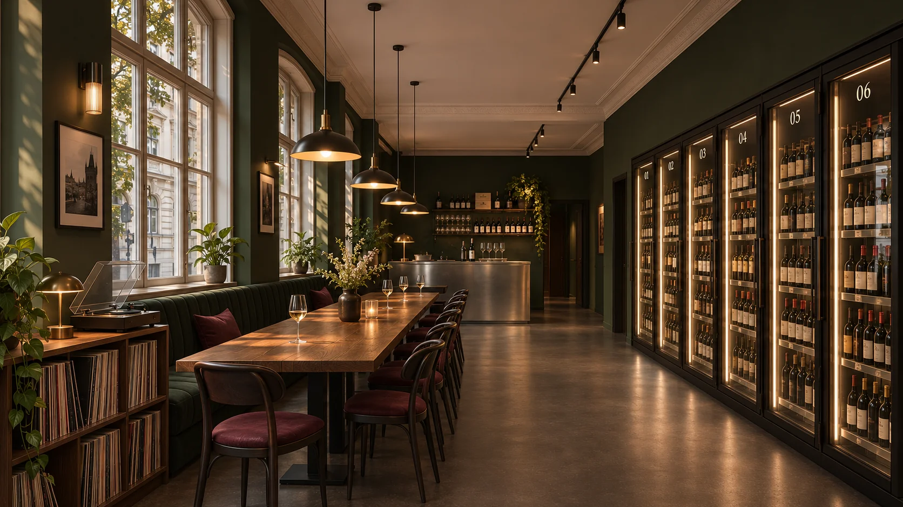
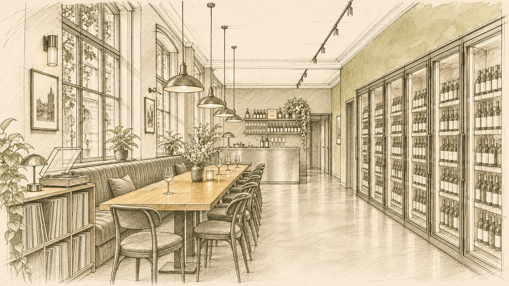
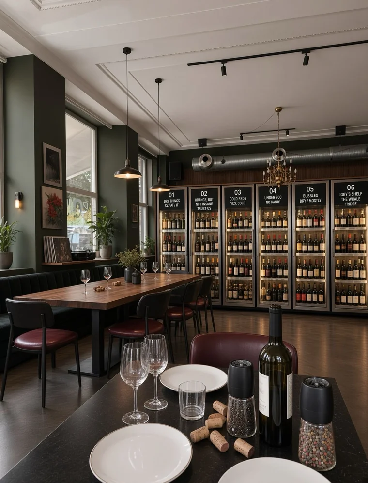
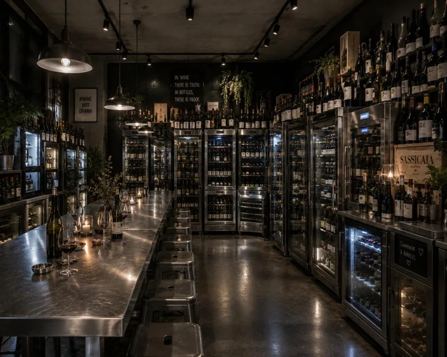
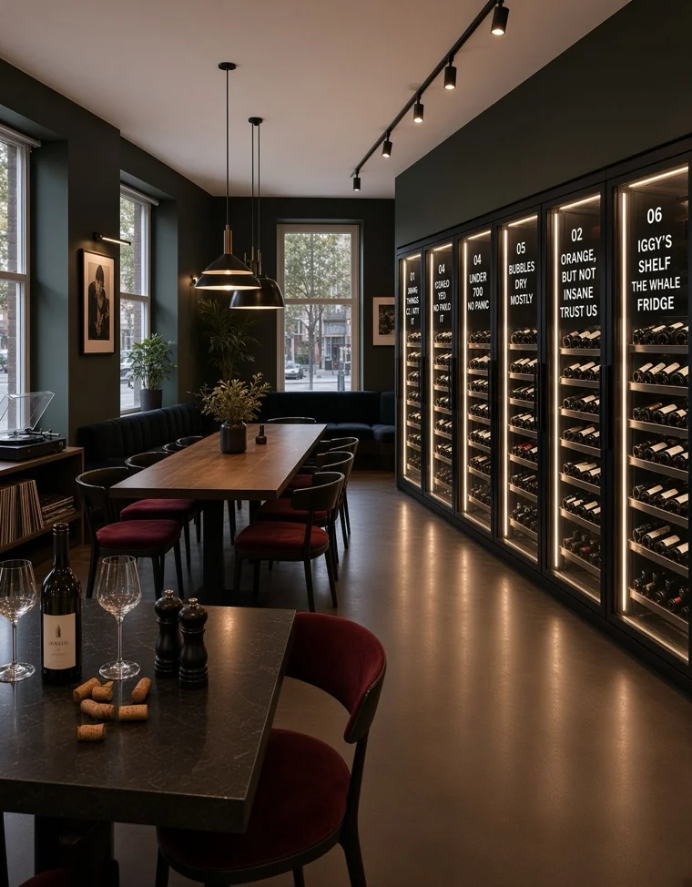
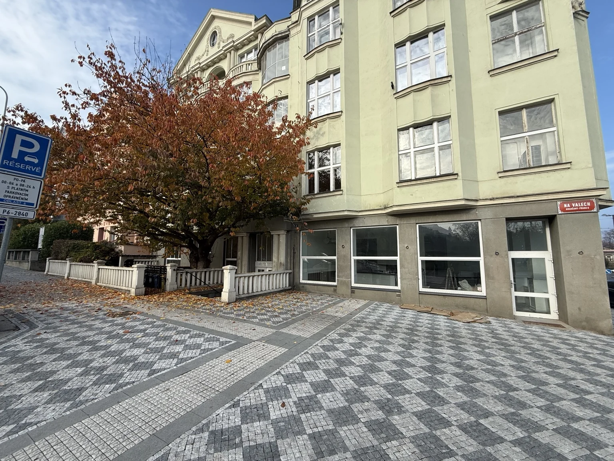
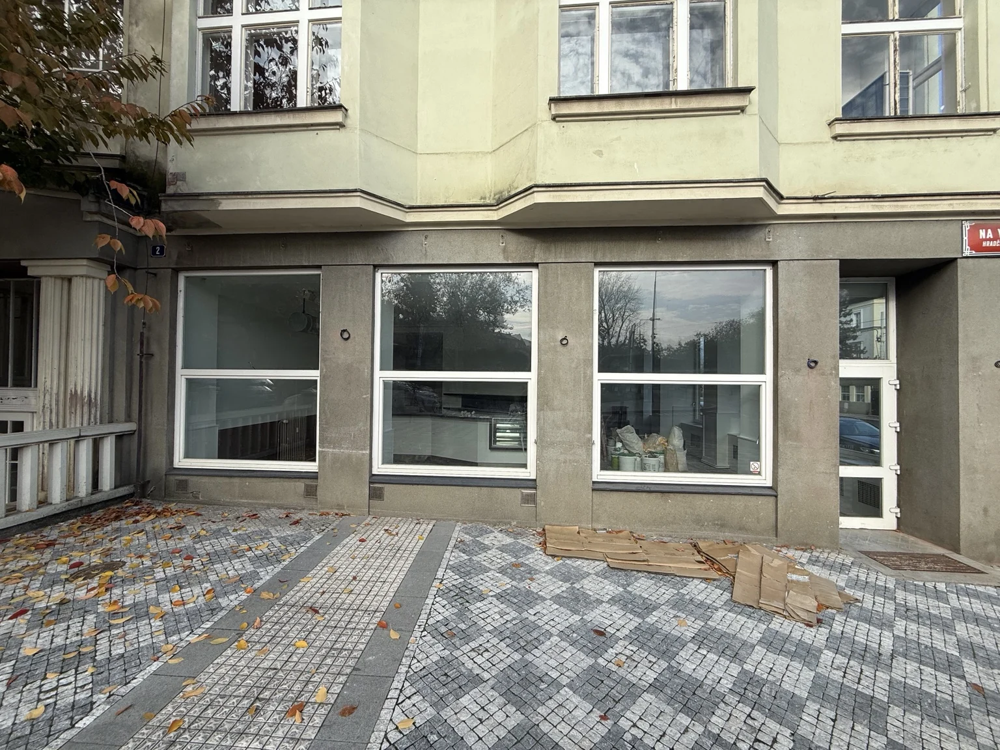
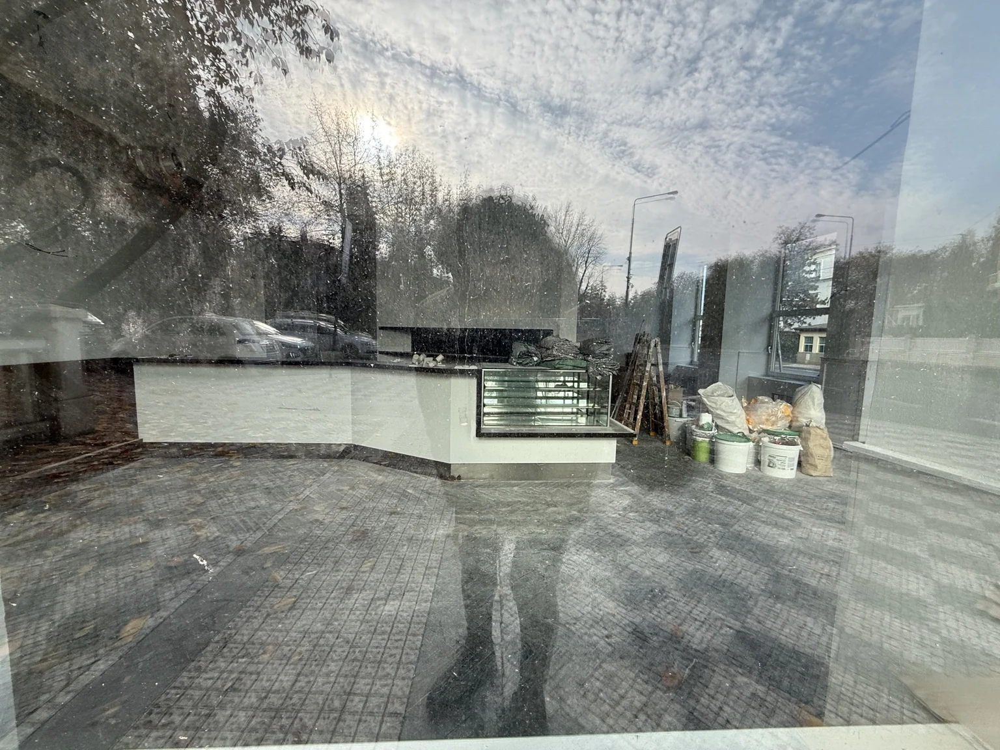

Pick a bottle.
Clear prices. Human language. Good advice when you want it.
Neighbourhood wine shop & listening bar
PRAGUE 6 / CONCEPT JOURNAL
A wine shop you come back to.
A listening bar you stay a little longer in.
A new local, waiting for its address.

Independent wine shop + listening bar + good company
Seeking a space & creative partnersReally good wine. A record worth listening to. Someone who remembers what you liked last time.
FRIDGES brings the freedom of a bottle shop and the warmth of a neighbourhood bar into one place. Browse the fridges, ask for a recommendation, open something here or take it home.
Czech, Austrian, Italian and other discoveries. Natural when it’s good. Classic when it’s good. Curiosity over categories.
See it through a customer’s eyesClear prices. Human language. Good advice when you want it.
A shared table, a thoughtful record and absolutely no tasting exam.
Today’s discovery becomes next week’s reason to return.
Not a wall of labels you need to decode.
Six approachable ways to find your bottle.
Clean, bright and easy to love. Think Grüner Veltliner, Riesling and a good conversation about which one to take home.
FAMILIAR STYLES. NEW FAVOURITES.Working assortment and category names. “Under 700” refers to a proposed retail price ceiling in Kč; final selection and pricing to be developed. Each cabinet is conditioned for its wines.
Old Prague bones. Honest materials.
A few details you’ll remember.

Our signature and the visual anchor. Six glass-front cabinets, clear category names and warm, restrained light.
A place for a glass alone, an easy conversation or a small hosted tasting. Flexible seating, never a packed dining room.
Vinyl, considered speakers and a soft seat. Sound that adds character while leaving room for conversation.
THE MATERIAL LANGUAGE



Founder-supplied visual references, included for inspiration. They do not depict a secured site or completed project.
A study of the Café Pointa premises on Na valech, near Hradčanská. Broad windows, a tree outside and the kind of street presence that makes a local feel like it belongs.



THE DESIGN INTENT


A location to explore. Availability, landlord agreement and technical feasibility remain unconfirmed. The renderings explore atmosphere and frontage only; a measured survey and equipment, services, acoustic and cost reviews would follow. Outdoor seating would need separate confirmation.
Hradčanská is our first choice. Other Prague neighbourhoods are welcome, with the layout, scale and offer adapted to the right premises.
Retail is easy to enter and browse. Seating has its own rhythm. Service and storage do the quiet work behind it all.
An illustrative zoning study, not a measured or construction drawing. Final capacity, access, facilities and circulation depend on the selected premises.
A visible fridge wall, a legible entrance and a browsing route that stays clear of seated guests.
*Support spaces shown as a functional allowance; their subdivision, access and compliance require a property-specific plan.
The everyday bottle shop supports the social experience. The social experience brings people back to the shop.
We’re designing around repeat neighbourhood visits, a focused wine selection and a compact operating model. The ambition is a useful local business with a distinctive identity.
Indicative retail bottles, plus a small special-occasion selection. Final buying, margins and service pricing are to be validated.
Approachable retail buying for dinner, gifts and the fridge at home. Transparent shelf prices and a tightly edited range.
A concise by-the-glass list and bottles to open on site. Clear service pricing; simple cold plates planned around the final facilities.
Small tastings, producer visits and considered record evenings. A way to deepen discovery, with capacity and sound appropriate to the building.
Before committing to a lease, we need property-specific rent and service charges, a fit-out and equipment budget, staffing, stock funding and a downside cash-flow model. The key measure is contribution after wine cost, service labour, waste, payment fees and occupancy.
On-site and takeaway sales should be modelled separately. By-the-glass rotation, open-bottle preservation, stock turnover and the cost of refrigeration all belong in the plan. No revenue, return or payback forecast is represented here.
A concept by Hugo & Mantas.
Seeking the partners who can help
shape, deliver and run our first venue.
A hospitality professional or team to help shape and run the venue, covering staffing, service, stock, suppliers and day-to-day performance.
Discuss operationsArchitects, interior designers and fit-out contractors to turn the concept into a practical layout, costed specification and finished space.
Discuss design & buildA specialist supplier to specify and supply wide, glass-front wine display cabinets that combine temperature-controlled storage with clear bottle presentation, browsing access and a practical installation and service plan.
Discuss refrigerationAn investor to explore funding the first venue. Capital needs, business assumptions and partnership terms will be developed around the selected site and discussed privately.
Discuss investmentProperty owners or agents with a suitable street-level space in Prague. Hradčanská is our first choice; other neighbourhoods and adaptable layouts are welcome.
Suggest a spaceHradčanská is where the idea began. We’re open to other Prague neighbourhoods and will adapt the layout, scale and offer to the right premises.
EXPLORE THE SPACE & DESIGN BRIEFS
WORKING SEARCH BRIEF
A welcoming street-level unit with a visible entrance, a walkable residential catchment and room for wine discovery, comfortable seating and efficient service.
Tell us about a spaceWORKING CREATIVE BRIEF
We’re looking for architects, interior designers and fit-out teams to turn this atmosphere into a buildable, costed hospitality space.
Discuss the design & fit-outThe size and seating ranges are preliminary design assumptions, to be adapted to the selected site. Visuals and layouts are conceptual; roles, scope and commercial terms will be agreed individually.
A BOTTLE SHOP. A LISTENING BAR. YOUR NEXT LOCAL.
If a cherry tree comes with the space,
even better.